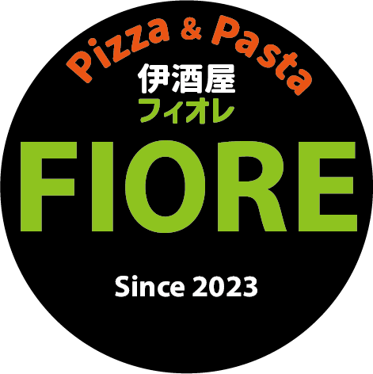

地域食材と人の輪が交差する、古民家レストラン「伊酒屋FIORE」。
最新情報・ご予約はInstagramから！
日々の営業状況、空席情報、季節のメニューなどはInstagramで毎日発信中！お席のご予約やお問い合わせもDMにて承っております。
@_izakaya__fiore2023旧広井小学校での2年間のチャレンジ営業を経て、地域の皆様に温かく見守られながら実績を重ねてまいりました。
その後、地域の方々の多大なるご協力を得て一軒の古民家をリノベーション。
2025年8月、和の面影を残しながらもモダンな現在の「伊酒屋FIORE」としてオープンいたしました。
伊酒屋FIORE（いざかや フィオレ）
〒786-0504 高知県高岡郡四万十町十川243-4
JR予土線「十川（とおかわ）駅」から約628m（徒歩圏内）
ランチ 11:30～14:00
ディナー 17:00～22:00
水曜日
※最新の営業スケジュールはInstagramをご確認ください
店舗付近に4台分完備
※駐車台数に限りがございます。満車時の対応や乗り合わせのお願いなど、詳しくはInstagramのハイライト等をご覧ください。
当店のご予約やお問い合わせは、Instagramのダイレクトメッセージ（DM）にて承っております。
満席の日も多いため、ご来店前の事前予約をおすすめいたします。長期のお休みや臨時営業の予定もすべてInstagramにて公開中です。
@_izakaya__fiore2023 をフォロー・予約